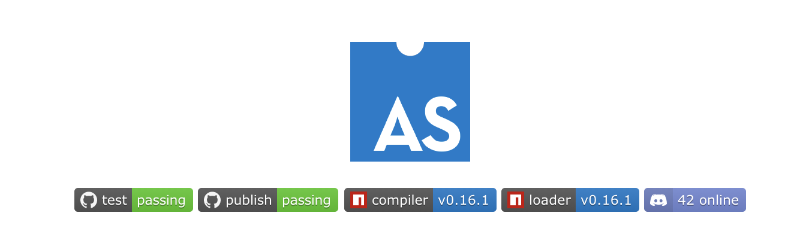

- 00 开篇词 我们为什么要了解 WebAssembly？.md.html
- 01 基础篇：学习此课程你需要了解哪些基础知识？.md.html
- 02 历史篇：为什么会有 WebAssembly 这样一门技术？.md.html
- 03 WebAssembly 是一门新的编程语言吗？.md.html
- 04 WebAssembly 模块的基本组成结构到底有多简单？.md.html
- 05 二进制编码：WebAssembly 微观世界的基本数据规则是什么？.md.html
- 06 WAT：如何让一个 WebAssembly 二进制模块的内容易于解读？.md.html
- 07 WASI：你听说过 WebAssembly 操作系统接口吗？.md.html
- 08 API：在 WebAssembly MVP 标准下你能做到哪些事？.md.html
- 09 WebAssembly 能够为 Web 前端框架赋能吗？.md.html
- 10 有哪些已经投入生产的 WebAssembly 真实案例？.md.html
- 11 WebAssembly 在物联网、多媒体与云技术方面有哪些创新实践？.md.html
- 12 有哪些优秀的 WebAssembly 编译器与运行时？.md.html
- 13 LLVM：如何将自定义的语言编译到 WebAssembly？.md.html
- 14 有哪些正在行进中的 WebAssembly Post-MVP 提案？.md.html
- 15 如何实现一个 WebAssembly 在线多媒体处理应用（一）？.md.html
- 16 如何实现一个 WebAssembly 在线多媒体处理应用（二）？.md.html
- 17 如何实现一个 WebAssembly 在线多媒体处理应用（三）？.md.html
- 18 如何进行 Wasm 应用的调试与分析？.md.html
- 19 如何应用 WASI 及其相关生态？.md.html
- 20 总结与答疑.md.html
- 结束语 WebAssembly，未来已来.md.html
- 捐赠
20 总结与答疑
你好，我是于航。
在这节课里，我将和你总结一下自开课这段时间以来，各位同学在各个渠道提出的有关 Wasm 的一些问题。限于篇幅，这里我优先选择了 8 个相对比较有代表性的问题，来给你进行解答。对于其中一些已经回复过的问题，我也会给你做进一步的解析。如果你有其他的问题，也欢迎在评论区和我进一步交流。
问题1：Wasm 就像 Node.js 源于 Web 但又不止于 Web 吗？
两者并不一样。对于 Node.js 本身来说，它只是一个可以在 Web 浏览器之外运行 JavaScript 代码的 Runtime 运行时，同时它还提供了一些特殊的 API 可以让我们使用 JavaScript 代码来与操作系统相关的资源打交道，比如文件资源、网络资源等等。因此，我们说 Node.js 是一种实现。
而反观 Wasm，正如我们在第 03 讲中介绍的那样，它是一种新的 V-ISA 标准，而非实现。如果实在想要去类比的话，你可以将 Wasm 类比为 JavaScript 的所在位置（编程语言），但实际上 Wasm 更加底层，类比到 Java 字节码可能会更加恰当。
因此总结来看，Node.js 为在 Web 浏览器之外执行 JavaScript 代码提供了可能，而 Wasmtime 等虚拟机为在 Web 浏览器之外执行 Wasm 字节码提供了可能。但 Wasm 本身一般被作为高级语言的编译目标，其标准更加贴近底层（汇编），与 JavaScript（高级语言）并不在一个层面上。
问题2：Wasm 能够与系统底层进行通信吗？
Wasm 是标准而非实现。同上一个问题类似，Wasm 本身只是一个新的 V-ISA 标准，而非实现。因此，能否与底层系统进行通信完全取决于用来执行它的 Runtime 运行时环境。
比如在 Web 浏览器中，我们便无法通过 Wasm 来访问操作系统的底层资源。而在通过诸如 Wasmtime、Lucet 等运行时环境，来在 Web 浏览器之外执行 Wasm 字节码时，便可以在 WASI 标准的基础之上来访问操作系统的相关资源了，这正如我们在第 19 讲中介绍的实例那样。
而至于访问的到底是不是“系统底层资源”，就要看你如何定义“底层”这个词了。但无论如何，只要 WASI 抽象操作系统接口标准能够覆盖所有操作系统实际提供的接口，那么，我们实际上就拥有了完全的操作系统控制能力。我想这个时候是不是底层资源，就已经不那么 重要了。
问题3：TypeScript 可以设置参数类型，但是最后 TypeScript 代码也会被编译成 JavaScript，所以 TypeScript 是不是只是规范程序员写代码，对于应用的性能其实没有什么帮助？
从流程上来看，由于 TypeScript 代码最终会被编译为 JavaScript 代码，因此事实上对应用整体性能的影响可以说是微乎其微（TypeScript 编译器在编译过程可能会进行一些优化）。因此，大部分使用 TypeScript 的场景，在我看来主要还是为了利用其“静态类型检查”的特性，来保障应用在多人团队协作时，其各个组成部分的接口使用能够准确无误，以防止意外的 BUG 产生。
但从另外一个角度来看，既然 TypeScript 中有着变量“类型”的概念，那是不是也可以将它的代码转换为 Wasm 字节码呢？实际上，一个名为 AssemblyScript 的项目便正在尝试这样的事情。通过这个项目，你可以使用 TypeScript 的语法来编写代码，然后再将这些代码转换为 Wasm 字节码。当然，受限于 TypeScript 本身的语言特性，为了能够支持 Wasm 中如“内存操作”等相关的指令，AssemblyScript 还进行了一些其他的扩展，详情你可以点击这里进行了解。

问题4：如果 ES6 等后续 JavaScript 版本解决了浏览器兼容性问题，不再需要“编译”回老版本代码，从而获得一定的性能保障。这是否会成为 Wasm 发展的重大阻碍呢？
有很多企业都在尝试直接在浏览器中使用 ES6 代码，以提升应用的性能。比如 Twitter 曾在今年八月初宣布其 Web App 将在所有现代浏览器中直接使用 ES6+ 的代码。而这一举动使得其 Web 应用的代码库体积，从原先的 16.6KB 大小下降到了 2.7KB，整整减小 83%。但除开 Twitter 外的其他企业大多都还比较保守，仍然处在观望阶段。
但无论如何，直接使用 ES6+ 代码所带来的应用性能提升是显著的。比如更小的网络资源开销，更少的需要执行的代码等等。但如果我们换一个角度来看，对浏览器引擎来说，只要执行的是 JavaScript 代码，那就一定少不了生成 AST、Profiling、生成 IR 代码、优化以及去优化等过程。而这些过程才是相较于 Wasm 来说，真正花时间的地方。
因此，如果我们不考虑“直接使用 ES6+ 代码”这一方案的可实施性，光从现代 JavaScript 语言和 Wasm 两者之间来看，JavaScript 作为一种高级动态语言，其执行性能还是无法跟 Wasm 这类 V-ISA 直接相比的，这个比较过程就如同拿 JavaScript 来与 X86 汇编进行比较。
当然，你也需要注意的是，性能只是 Wasm 众多发展目标中的一个，并且相对好的性能也是由于其 V-ISA 的本质决定的。除此之外，Wasm 希望能够通过提供一种新的、通用的虚拟字节码格式，来统一各个语言之间的差异，并且借助于 Capability-based Security 安全模型来为现代应用提供更好的安全保护策略。可以说 Wasm 是起源于 Web，但志不仅仅在 Web。
问题5：感觉 Flat-WAT，比 WAT 看着好懂，Wasm 为啥不直接使用 Flat-WAT？
这个主要是由于 Wasm 核心团队初期在设计 Wasm 可读文本格式时，对“S-表达式”这种代码表达方式的选择。而为什么会选择“S-表达式”则是出于对以下这样几个因素的考虑：
- 尽量不自行创建新的格式，而是直接利用现有的、常用的、成熟的格式规范；
- 这种格式可以表达 Wasm 模块的内部结构，并且可以与字节码一一对应；
- 这种格式可以“转换”为方便人们阅读的形式。
因此，出于对这样几个因素的考虑，核心团队便选择了“S-表达式”来作为 Wasm 可读文本 WAT 的一种表达方式。而对于编译器和相关工具来说，这种“S-表达式”可以被现有的很多代码实现直接解析和使用，不需要重新造轮子，进而减轻了 Wasm 早期发展时的难度和负担。
而同时“S-表达式”也可以被转换为相应的 “Linear Representation” 的形式，也就是 “Flat-WAT” 这种格式。所以这里的因果关系是先有“S-表达式”形式的 WAT，才有其对应的 Flat-WAT。
问题6：什么时候用 Clang(LLVM) 编译 Wasm？而什么时候又该用 Emscripten 编译 Wasm？
这个区分其实很简单，需要在 Web 浏览器中运行的 Wasm 应用，一定要使用 Emscripten 来进行编译；而需要在 out-of-web 环境中使用的 Wasm(WASI) 应用，可以使用 Clang 来编译。
当然，Clang 与 Emscripten 两者在可编译和生成 Wasm 字节码这个能力上，有着一定的重叠。毕竟 Emscripten 就是借助了 LLVM 的后端来生成 Wasm 格式的。但不同的是，Emscripten 会在编译过程中，为所编译代码在 Web 平台上的功能适配性进行一定的调整。比如 OpenGL 到 WebGL 的适配、文件操作到虚拟文件操作的适配等等。
而使用 Clang 编译 Wasm 应用，不会进行上述这些针对 Web 平台的适配。因此仅在编译 WASI 应用时选择使用 Clang 来进行交叉编译。大多数时候，你的最佳选择仍然是 Emscripten。
问题7：对于使用 Webpack 的 Web 前端项目，如何优雅地引入第三方的 Wasm 组件？
就目前来看，大多数的第三方 Wasm 库都是以 JavaScript 函数来作为库的实际使用入口的，而并没有直接暴露出一个或多个 Wasm 模块文件给到用户。因为一个 Wasm 模块在实例化时，可能还需要使用到很多不同的外部“导入性”信息（通过 Import Section）。而这些信息则属于这个库本身组成的一部分，这部分内容不应该全部由用户来提供。
因此，在实际使用时可以直接通过 “import” 的方式来导入对应的库即可。唯一要注意的是，对于 Webpack 可能需要设置相应的 Wasm Loader，具体可以参考实际项目的使用说明。
问题8：我想知道我伟大的大不列颠太阳永不落 PHP 同志是否可以被编译成 Wasm？
答案当然是可以的。不过由于 PHP 是一种动态类型的语言，因此我们只能把 PHP 的运行时编译成 Wasm，然后将其运行在其他的宿主环境中。这里可以参考一个名为 “pib” 的项目， 链接在这里。
除此之外，目前 Wasm 已经支持多达几十种编程语言，它们都会以不同的方式（本身被编译为 Wasm，或其运行时被编译为 Wasm）来与 Wasm 产生交集。我们先不说这些项目都是否有着其实际的应用价值，但无论如何，这都从侧面说明了人们对 Wasm 的未来期望。
好了，今天的课程就结束了，希望可以帮助到你，也希望你在下方的留言区和我参与讨论，同时欢迎你把这节课分享给你的朋友或者同事，一起交流一下。
© 2019 - 2023 Liangliang Lee. Powered by gin and hexo-theme-book.